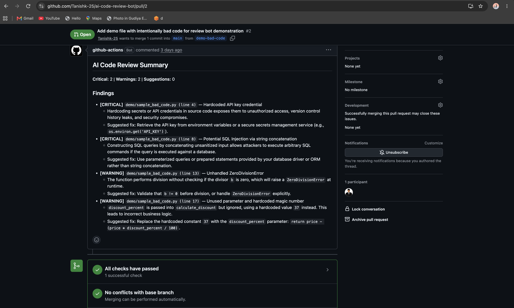
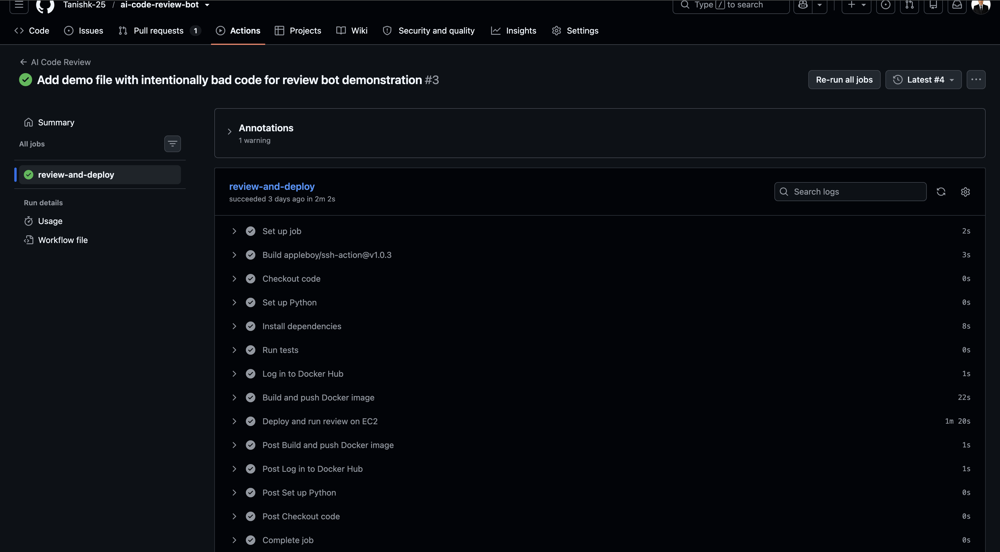
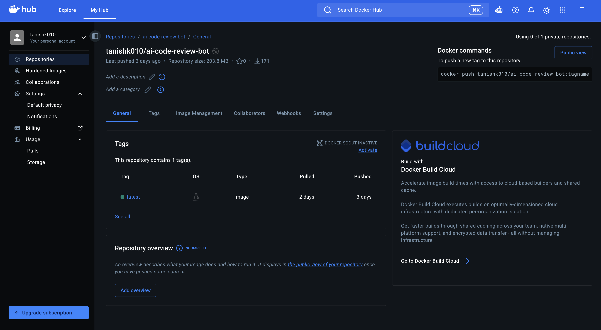
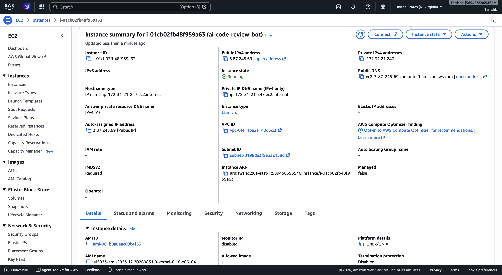

🤖 AI Code Review Bot for CI/CD Pipelines
An AI-powered pull request reviewer that runs as a real containerized service — deployed via a full CI/CD pipeline to AWS EC2, not just a script inside a CI runner.
An AI-powered pull request reviewer that runs as a real containerized service — deployed via a full CI/CD pipeline to AWS EC2, not just a script inside a CI runner.
When a pull request is opened or updated, a GitHub Actions workflow automatically runs the test suite, builds a Docker image, pushes it to Docker Hub, and deploys it to a live AWS EC2 instance. Inside that running container, the bot fetches the PR's diff via the GitHub REST API, sends it to Google's Gemini API for review, validates the AI's response against a strict schema, and posts a single, severity-classified summary comment back on the pull request — automatically, on every push.
Every PR diff is analyzed by Gemini and returned as severity-classified findings for security issues, bugs, and code quality.
AI responses are validated against Pydantic models before posting, so malformed or unexpected output never reaches the PR.
Tests → Docker build → Docker Hub → SSH deploy to EC2, fully automated, end-to-end in under 2 minutes.
All credentials live in GitHub Actions Secrets with scoped workflow permissions — nothing is hardcoded or logged.
System instructions are structurally isolated from untrusted PR diff content passed to the model.
A repo-level config file controls severity thresholds, excluded paths, and max diff size — no code changes needed.



